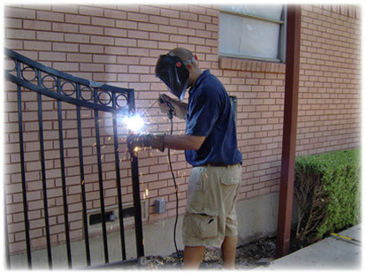
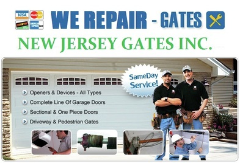

Rolling Gate - Installation, Repair and Maintenance
Rolling Gate - Installation, Repair and Maintenance
Gates Repair & Wrought iron decor

NJ Gates passion
to provide you with the finest wrought iron and related decor available.
Wrought iron decor is our passion. Iron decor speaks volumes of one’s personal taste and is in our opinion one of the greatest examples of opposing forces, brought together by artisan blacksmiths who create something truly unique from this solid material.
With a specific focus on wrought iron furniture and decor it allows us to give you the best shopping experience and customer service of any wrought iron furnishings store online New Jersey Gates repair , Rolling Gate repair storefront gate fin NJ gates repair install gate , gate operator , gate service , lubrication gates. roll up gate roll down gates new jersey gate 24/7 , 24 hour gate services
Providing the world with quality wrought iron decor from the large blacksmith shops to the small local one artisan shops gives us a great feeling of satisfaction and allows us to offer wrought iron accessories that cannot be found anywhere else online. Because of our hand selected product offering we stand behind each and every wrought iron product we sell, knowing it is of the highest quality.
24-7 Gates Repair services for Individual , Residential & Business

We are a Family
owned business and that's how we are going to keep it.
As NJ Gates Wrought Iron continues grow more people will come to work with us and that’s all part of the plan to create jobs for designers, decorators, and people who are truly passionate about the work they do and the people’s homes, cabins and offices they help decorate
There is nothing more important than quality personal service and advice from people who care about the products they sell. New Jersey Gates repair , Rolling Gate repair storefront gate fin NJ gates repair install gate , gate operator , gate service , lubrication gates. roll up gate roll down gates new jersey gate 24/7 , 24 hour gate services